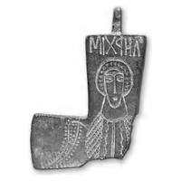
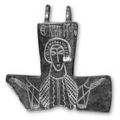

Catalog › CE-0476 · SYR2012-73
Encolpion bivalv de aliaj de cupru, cat. 73, NMIU Kiev
sec. X–XI (901–1100) · loc necunoscut · Muzeul Național de Istorie a Ucrainei (НМИУ), Kiev, inv. в 961
double-sided reliquary cross (enkolpion), altul; c. X–XI (901–1100); find spot unknown; kept at Muzeul Național de Istorie a Ucrainei (НМИУ), Kiev.




Identificare
- Categorie
- Encolpion bivalv (relicvar)
- Material
- Altul
- Tehnică
- Gravare (incizie)
- Stare
- Fragmentară
- Dimensiuni
- Î 51 × L 39 × Gr 10 mm
Iconografie
- Avers
- Sf. Arhanghel Mihail
- Descriere avers
- Sfântul arhanghel Mihail cu aripi, în veșmânt bogat ornamentat. Nimbul este decorat cu un rând de triunghiuri foarte mici; chip alungit, schematic. Veșmântul este ornamentat cu linii verticale duble și ondulate, pe laterale cu crestături oblice; în interiorul aripii și pe marginea ei exterioară, ornament din triunghiuri foarte mici.
- Descriere revers
- Sfântul mucenic Nichita în picioare, rugându-se; nimb decorat cu un rând de triunghiuri foarte mici. Imaginea este executată cu aceleași procedee și în aceeași manieră ca arhanghelul Mihail de pe valva anterioară.
- Inscripții
- Față: MIXAHЛ; revers: ⒶNHKHTAC
- Limba
- Greacă
Datare și atribuire
- Datare
- sec. X–XI (901–1100)
- Tipologie
- cruce-relicvar cu arhanghelul Mihail pe față și Sf. Nichita pe revers
Descoperire
- Context
- Colecție (fără context)
- Coordonate
- 50.4536° N, 30.5164° E
- Precizia locului
- Loc de păstrare (loc de descoperire incert)
Păstrare și referințe
- Colecție
- Muzeul Național de Istorie a Ucrainei (НМИУ), Kiev
- Nr. inventar
- в 961
- Bibliografie
- A. A. Пескова, Л. В. Строкова, Христианские древности Византии в «Сирийской коллекции» Б. И. и В. Н. Ханенко, Sankt-Petersburg–Kiev, 2012, 225 p. [Peskova, Strokova 2012], p. 184, cat. nr. 73, ilustrația (fotografie și desen) de la p. 184.
- Figura
- ilustrația la cat. nr. 73
- Planșe
- Peskova, Strokova 2012, p. 184
- Observații
- Cruce-relicvar cu brațe drepte evazate; valve subțiri, adânci, cu rebord vertical; suprafețe patinate și murdare. La valva anterioară lipsesc capătul de jos și brațul drept, la cea posterioară capătul de jos și parțial brațul stâng. Autoarele trimit la cat. 22 și 25 și semnalează valva posterioară de la Boboševo (Kjustendil, Bulgaria), cu o imagine foarte apropiată a unui arhanghel. Dimensiuni în sursă (în paranteză, înălțimea cu urechile): valva anterioară: 5,1×3,9 cm; valva posterioară: 5,1×6,1 cm; grosime 0,9–1,0 cm. Atribuirea autoarelor: Orientul Apropiat (?), sec. X–XI. Locul descoperirii nu este dat în sursă; aparține anexei II (cruci pectorale de proveniență necunoscută din colecția НМИУ). Material în sursă: aliaj de cupru. Locul descoperirii nu e cunoscut cu precizie; punctul de pe hartă marchează locul de păstrare (Muzeul Național de Istorie a Ucrainei), nu locul descoperirii. Coordonate: nu sunt date în sursă.
Citare: Corpus Encolpiorum, CE-0476, Encolpion bivalv de aliaj de cupru, cat. 73, NMIU Kiev, --root/piese/SYR2012-73/ (accesat 2026-10-20).